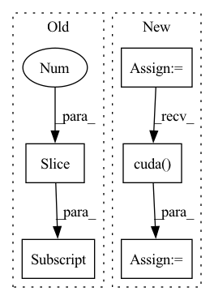

Pattern ID :40467
Before Change
if len(detections_class) == 1:
break
ious = bbox_iou(max_detections[-1], detections_class[1:])
detections_class = detections_class[1:] [ious < nms_thres]
// 堆叠
max_detections = torch.cat(max_detections).data
// Add max detections to outputsAfter Change
image_pred = image_pred[conf_mask]
class_conf = class_conf[conf_mask]
class_pred = class_pred[conf_mask]
if not image_pred.size(0):
continue
// 获得的内容为(x1, y1, x2, y2, obj_conf, class_conf, class_pred)
detections = torch.cat((image_pred[:, :5], class_conf.float(), class_pred.float()), 1)
// 获得种类
unique_labels = detections[:, -1].cpu().unique()
if prediction.is_cuda:
unique_labels = unique_labels.cuda()
detections = detections.cuda()
for c in unique_labels:
// 获得某一类初步筛选后全部的预测结果
detections_class = detections[detections[:, -1] == c]In pattern: SUPERPATTERN
Frequency: 3
Non-data size: 5
Instances Fragment ID: 114692510
Project Name: bubbliiiing/yolov4-tiny-pytorch
Commit Name: 2d2cdb534ddf3b957c675bb296630530ddfa3ea8
Time: 2020-09-13
Author: 47347516+bubbliiiing@users.noreply.github.com
File Name: utils/utils.py
M Class Name: AnonimousClass
N Class Name: AnonimousClass
M Method Name: non_max_suppression(4)
N Method Name: non_max_suppression(4)
M Parent Class:
N Parent Class:
M File Name: utils/utils.py
N File Name: utils/utils.py
M Start Line: 210
M End Line: 246
N Start Line: 209
N End Line: 243
Before Change
score = score[keep]
// 取出成绩最好的一些建议框
order = score.ravel().argsort()[::-1]
if n_pre_nms > 0:
order = order[:n_pre_nms]
roi = roi[order, :]
After Change
n_pre_nms = self.n_test_pre_nms
n_post_nms = self.n_test_post_nms
anchor = torch.from_numpy(anchor)
if loc.is_cuda:
anchor = anchor.cuda()
//-----------------------------------//
// 将RPN网络预测结果转化成建议框
//-----------------------------------//
Fragment ID: 114692526
Project Name: bubbliiiing/faster-rcnn-pytorch
Commit Name: d456f02a402fd8cf8db1d991aa612439b3c0ffb2
Time: 2021-01-30
Author: 47347516+bubbliiiing@users.noreply.github.com
File Name: nets/rpn.py
M Class Name: ProposalCreator
N Class Name: ProposalCreator
M Method Name: __call__(6)
N Method Name: __call__(6)
M Parent Class:
N Parent Class:
M File Name: nets/rpn.py
N File Name: nets/rpn.py
M Start Line: 43
M End Line: 69
N Start Line: 36
N End Line: 72
Before Change
for parameter in list(model.parameters()):
m_parameter = torch.cat((m_parameter, parameter.data.view(-1)))
return m_parameter[1:]
def unravel_model_params(model, parameter_update):
After Change
Squash model parameters or gradients into a single tensor.
parameters = [param.data.view(-1) for param in model.parameters()
] // vectorize each model parameter
m_parameters = torch.cat(parameters)
if cuda:
m_parameters = m_parameters.cuda()
return m_parameters
Fragment ID: 114692508
Project Name: smilelab-fl/fedlab
Commit Name: 12925dd3ac83f8a9e1fbd4ed32fb3ec602217a77
Time: 2021-04-09
Author: 928255708@qq.com
File Name: fedlab_core/utils/serialization.py
M Class Name: AnonimousClass
N Class Name: AnonimousClass
M Method Name: ravel_model_params(2)
N Method Name: ravel_model_params(2)
M Parent Class:
N Parent Class:
M File Name: fedlab_core/utils/serialization.py
N File Name: fedlab_core/utils/serialization.py
M Start Line: 10
M End Line: 19
N Start Line: 8
N End Line: 15